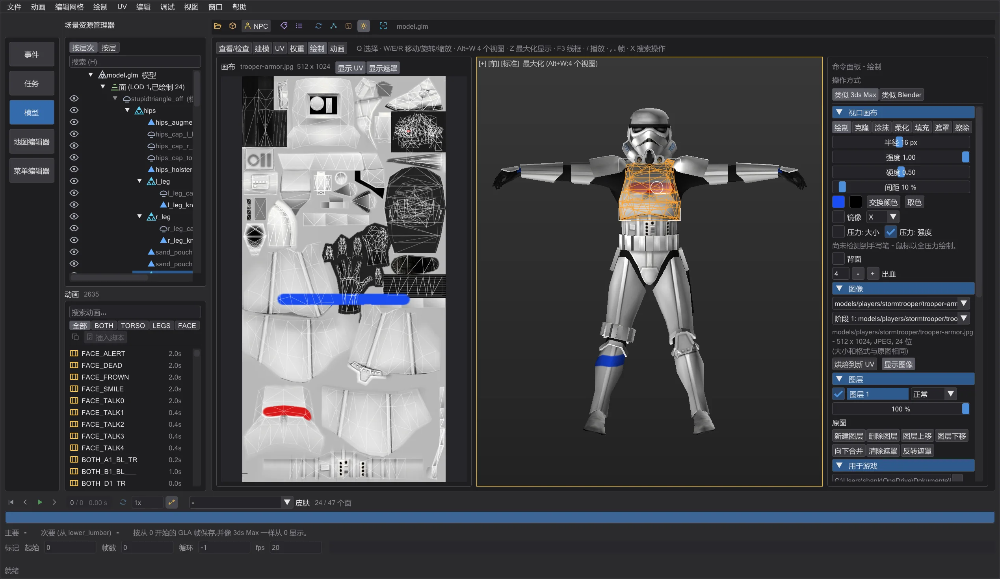
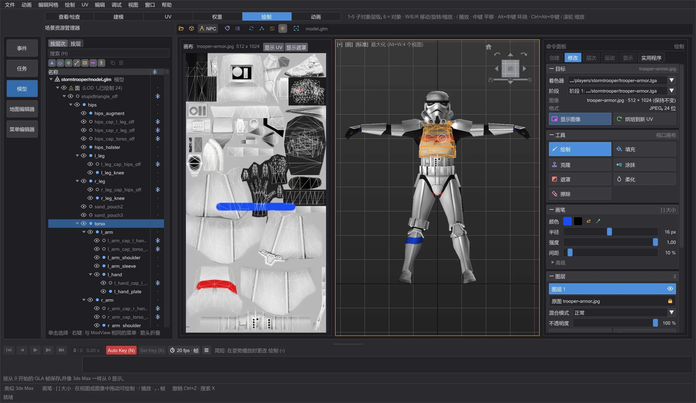
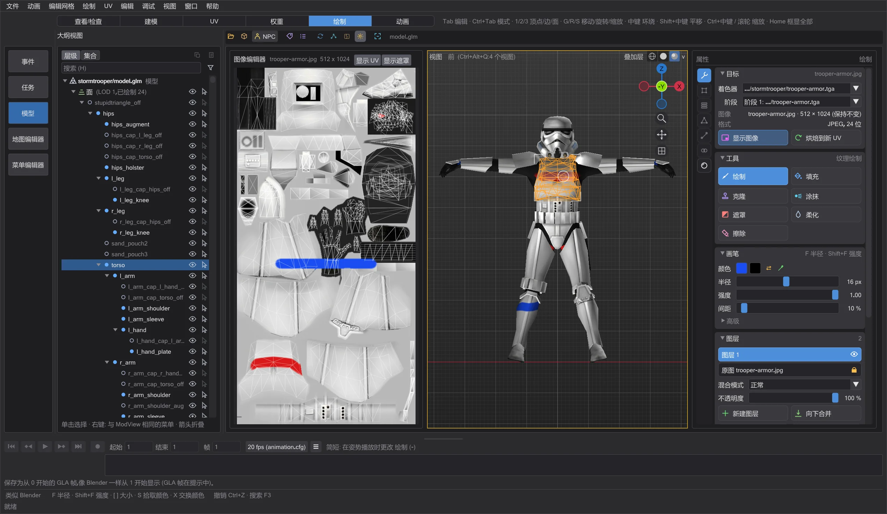

模型选项卡: 纹理绘制
直接在模型着色器背后的图像上绘制 - 在 3D 模型上 (动画播放时也可以) 或在平面图像中 - 并以原图的大小和格式写回供游戏使用。
绘制区域#
在模型选项卡顶部选择 绘制 区域。每个表面的图像就是游戏加载的那张: 表面的皮肤或着色器, 否则为同名着色器脚本的第一个 map 阶段。左侧 画布 (Blender 模式: 图像编辑器) 以平面方式显示该图像和 UV 三角形; 右侧视图像游戏中一样显示带完整着色器的模型。由于游戏每张图像只加载一次, 使用该图像的每个表面的每个阶段都会显示所绘内容, 即使在另一个着色器下 (例如 torso 和 torso_cull)。只有扩展名不同的名称 (皮肤中的 hair.tga, 着色器中的 hair) 也是同一张图像, 即游戏最先加载的文件。在视图中, 画笔只绘制着色器以其自身 UV 显示该图像的表面, 不经过带 tcGen 或 tcMod 的阶段。在视图中的笔画会绘制画笔下表面的图像 - 跨越接缝和 UV 岛也不会断开, 因为点按是模型上的一个球体。在图像中的笔画则以 2D 绘制。鼠标处的圆圈表示半径。每一笔都是一步撤销 (Ctrl+Z, Ctrl+Y)。

右侧面板#
右侧面板的分组按工作顺序排列。目标 显示绘制的对象: 着色器 (选择另一个即可绘制另一张图像)、着色器的阶段 (当它绘制多张图像时) 以及图像及其大小和格式 - 两者都与原图保持一致。显示图像 显示或隐藏视图旁的平面图像。工具 以带符号的按钮列出工具; 所选工具会高亮。画笔 设置颜色 (两个色块、交换、取色)、半径、强度和间距; 硬度、镜像、笔压、背面和出血位于 高级 下。图层 自上而下列出图层: 眼睛显示或隐藏图层, 最底部的原图带有锁, 列表下方是所选图层的混合模式和不透明度。用于游戏 写出已绘制的图像; 其标题会统计数量。与 3ds Max 相同时, 这些分组位于命令面板的 修改 选项卡 (用于游戏 也在 实用程序 下); 与 Blender 相同时, 位于属性编辑器的 工具 选项卡 (目标 也在 材质 下)。单击标题可折叠分组。


工具与画笔#
绘制、填充、克隆 (Ctrl+单击设置源点)、涂抹、遮罩、柔化 和 擦除 位于右侧面板的 工具 分组 - 相当于 3ds Max 的 视口画布 和 Blender 的 纹理绘制 -, 也在菜单 绘制、视图右键菜单和搜索中。半径、强度和间距设置画笔, 硬度 (衰减) 位于 高级 下; 使用手写笔时压力可改变大小和强度。按键 [ 和 ] 将画笔缩小或放大一级 (按住可连续); 在绘制区域中, 两种操作模式下它们都属于画笔。在视图中, 点按沿着你在屏幕上画出的线分布, 每一个都落在那里可见的表面上, 与 Substance Painter 和 Blender 相同 - 从一只手快速划到另一只手, 只在画笔经过模型的地方绘制, 背景上不会绘制任何内容。Blender 模式下 F 和 Shift+F 拖动半径和强度, S 取色, X 交换两种颜色, 1 显示遮罩。镜像 会在模型的镜像一侧再画一次每个点按 (角色为 x 轴)。与命中面朝向相差超过 80 度的面不受影响, 除非打开 背面。
图层、遮罩与接缝#
游戏原图是最底层, 只要在其上方的图层 (新建图层) 上绘制, 原图就保持不变。每个图层有不透明度和混合模式 (正常、正片叠底、相加、滤色、叠加), 可隐藏; 向下合并 将其合并到下方图层。遮罩保护纹素不受任何工具影响; 显示遮罩 在图像中以红色显示。每次点按后, UV 岛外侧的纹素会获得最近绘制纹素的颜色 (出血, 默认 4 个纹素), 这样远处不会出现深色接缝。在 UV 区域更改 UV 后, 烘焙到新 UV 会把每个图层和遮罩从旧 UV 转到新 UV。
用于游戏#
为游戏构建 会把每张已绘制的图像按其游戏路径 (例如 models/players/stormtrooper/...) 写入输出文件夹 - 模组文件夹或 fs_homepath, 绝不是游戏文件夹。大小和格式与原图相同: .tga 保持位深和压缩, .jpg 使用原图的量化表写入, .png 仍为 .png。未绘制的图像不会写入, 游戏继续加载原图。Movie Duels 先找 .jpg 再找 .tga, 因此文件保留原图的名称和扩展名。图层保留在 JK Studio 中。